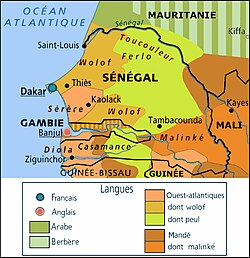

Une langue officielle dans un pays multilingue
Le Sénégal, pays d'Afrique de l'Ouest situé à l'extrême ouest du continent, présente une situation linguistique particulièrement riche et complexe. Avec ses quelque 17 millions d'habitants, le pays est officiellement francophone : le français y est la langue de l'État, de l'administration, de la justice et de la majorité de l'enseignement formel. Pourtant, dans la rue, sur les marchés, à la maison et dans la musique populaire, c'est le wolof que l'on entend partout.
Cette dualité est au cœur de l'identité linguistique sénégalaise. Le français a été imposé par la colonisation à partir du XVIIe siècle, lorsque les comptoirs commerciaux français se sont installés sur la côte, notamment à Saint-Louis et sur l'île de Gorée. L'expansion de la conquête au XIXe siècle, sous l'impulsion du gouverneur Faidherbe, a étendu la présence française à l'intérieur des terres, et avec elle l'usage administratif et scolaire de la langue française.

Carte du Sénégal
Une langue officielle, plusieurs langues du quotidien
Aujourd'hui, le français reste la langue officielle, mais il n'est parlé couramment que par environ 25 à 30 % de la population. Le wolof, langue d'un groupe ethnique majoritaire, est devenu la véritable lingua franca du pays : on estime qu'environ 90 % des Sénégalais le comprennent et l'utilisent dans la vie quotidienne, même lorsque ce n'est pas leur langue maternelle. À côté du wolof, le Sénégal reconnaît officiellement vingt-cinq langues nationales, parmi lesquelles le pulaar, le sérère, le diola, le mandinka et le soninké.
Le paradoxe Senghor
Le paradoxe sénégalais s'incarne sans doute le mieux dans la figure de Léopold Sédar Senghor, premier président du Sénégal indépendant en 1960. Poète, philosophe, l'un des fondateurs du mouvement de la Négritude qui célèbre les valeurs culturelles africaines, Senghor a néanmoins choisi de maintenir le français comme langue officielle de la nouvelle nation. Pour lui, la langue française n'était pas seulement l'héritage du colonisateur : elle était aussi un outil d'unité nationale dans un pays multilingue, un moyen d'accéder à la modernité internationale et un instrument de pensée qu'il a lui-même magnifié dans sa propre poésie.
Ce choix a façonné l'évolution linguistique du pays pendant des décennies. La Constitution de 1971 a inscrit le français comme langue officielle tout en reconnaissant six langues nationales ; celle de 2001 a élargi cette reconnaissance à toutes les langues parlées sur le territoire. Mais la situation reste tendue : le wolof gagne du terrain dans tous les domaines, y compris ceux qui étaient traditionnellement réservés au français, ce qui inquiète les locuteurs des autres langues nationales.
Un retour culturel inattendu
Plus surprenant encore, le rapport entre le français et les langues du Sénégal s'inverse aujourd'hui. À travers la diaspora sénégalaise et ouest-africaine en France, des artistes comme MC Solaar, MHD ou Aya Nakamura introduisent dans la langue française des mots, des rythmes et des références issus du wolof, du bambara ou des traditions griot. Le français qu'ils transforment retourne ensuite vers le Sénégal par le hip-hop, le rap et l'Afro Trap, créant une circulation linguistique inédite.
Ce site web propose d'explorer ces différentes facettes : l'histoire coloniale qui a installé le français au Sénégal, la situation linguistique contemporaine et ses tensions, et enfin le retour culturel par lequel les langues africaines transforment aujourd'hui la langue française elle-même.
Frise chronologique
La frise chronologique ci-dessous retrace les grandes étapes de cette histoire, des premiers comptoirs français du XVIIe siècle jusqu'aux phénomènes culturels contemporains.